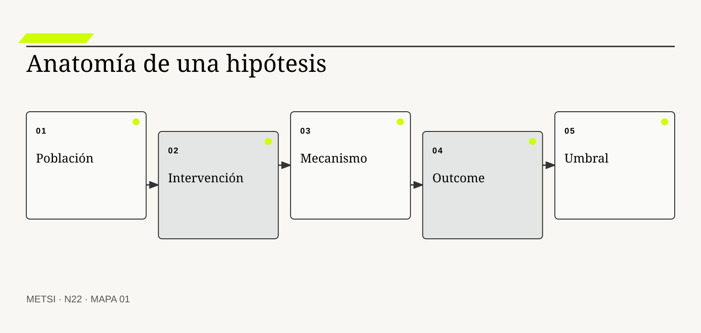
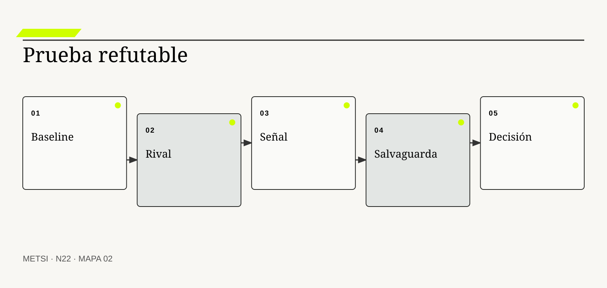
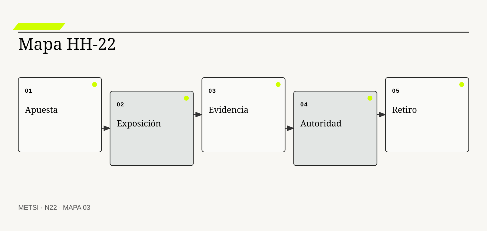

KP
Karl Popper
Formuló la refutación como criterio de crítica del conocimiento.

N22 convierte iniciativas en hipótesis refutables mediante mecanismos, baselines, resultados, salvaguardas, umbrales y decisiones predefinidas.
Iniciativas como hipótesis que pueden refutarse
Ruta de lectura: problema, distinciones, decisiones, prueba, transferencia y preparación.
Nota. SIN NUM. identifica aparatos de orientación y referencia.
Seis voces para ampliar, contrastar y discutir N22.
Formuló la refutación como criterio de crítica del conocimiento.
Estudió inferencia, validez y diseño cuasiexperimental.

Popularizó ciclos de construir, medir y aprender para reducir incertidumbre.

Integra descubrimiento continuo, outcomes y oportunidades.

Desarrolló prácticas rigurosas de experimentación en productos digitales.

Exige gobierno, medición y manejo de riesgos para sistemas de inteligencia artificial.
N22 no resume estas fuentes ni las convierte en receta. Las pone en tensión para construir juicio profesional.
¿Cómo dejar de defender una iniciativa por su promesa y empezar a exigirle evidencia capaz de cambiar la decisión?

N22 convierte iniciativas en hipótesis refutables mediante mecanismos, baselines, resultados, salvaguardas, umbrales y decisiones predefinidas.
Hotel Horizonte propone automatizar la asignación de habitaciones. La presentación promete menos espera, mejor ocupación y una experiencia consistente. Cada área aporta una razón distinta y todas quedan condensadas en una iniciativa llamada asignación inteligente.
El piloto mejora el tiempo promedio, pero aumenta cambios tardíos en habitaciones accesibles. Comercial celebra ocupación; Recepción registra reclamos; Tecnología muestra disponibilidad; Housekeeping observa más interrupciones. La iniciativa sobrevive porque cualquier resultado puede interpretarse como aprendizaje o éxito.
Una hipótesis útil corre otro riesgo: podría resultar falsa. Define población, intervención, mecanismo, resultado, horizonte, salvaguardas y evidencia que obligaría a detener o reformular. También distingue lo que se espera observar de lo que sólo se desea.
El equipo separa tres hipótesis. Una sobre información disponible al asignar, otra sobre reglas de prioridad y otra sobre comunicación. Diseña pruebas diferentes y limita exposición. La automatización deja de ser la solución a validar y pasa a ser una opción entre varias.
Refutar no significa fracasar. Significa evitar inversión, daño o dependencia cuando el mecanismo no se sostiene. La organización aprende algo decisivo sólo si estaba dispuesta a cambiar de curso.
N22 recibe de HH-21 objetos y responsabilidades. Su avance consiste en convertir iniciativas en afirmaciones discutibles y decisiones con umbrales previos.
HH-22 toma la capacidad de ingreso y formula hipótesis separadas para información, reglas y coordinación. Cada ficha declara outcome, población, mecanismo, baseline, señal adversa, costo de exposición, autoridad y próxima decisión. La iniciativa ya no puede apropiarse de cualquier mejora ni esconder una pérdida en el promedio.
N22 convierte iniciativas en hipótesis refutables mediante mecanismos, baselines, resultados, salvaguardas, umbrales y decisiones predefinidas.
N21 deja evidencia y decisiones abiertas que N22 utiliza sin reabrir su contenido. N22 convierte iniciativas en hipótesis refutables mediante mecanismos, baselines, resultados, salvaguardas, umbrales y decisiones predefinidas.
N23 recibirá apuestas explícitas y decidirá cómo cortarlas en capacidades que produzcan valor y aprendizaje. N22 no diseña todavía la secuencia de entrega.
Popper, K. fundamenta crítica y refutación de afirmaciones. En N22, ese aporte pone a prueba decisiones concretas y no funciona como respaldo ornamental. Su alcance se conserva en N22: ninguna referencia sustituye la evidencia del caso ni la autoridad necesaria para intervenir.
Campbell, D. T. y Stanley, J. C. aportan criterios de inferencia y validez en contextos reales. En N22, ese aporte pone a prueba decisiones concretas y no funciona como respaldo ornamental. Su alcance se conserva en N22: ninguna referencia sustituye la evidencia del caso ni la autoridad necesaria para intervenir.
Ries, E. vincula hipótesis, exposición y aprendizaje decisional. En N22, ese aporte pone a prueba decisiones concretas y no funciona como respaldo ornamental. Su alcance se conserva en N22: ninguna referencia sustituye la evidencia del caso ni la autoridad necesaria para intervenir.
Torres, T. integra outcomes, oportunidades y aprendizaje continuo. En N22, ese aporte pone a prueba decisiones concretas y no funciona como respaldo ornamental. Su alcance se conserva en N22: ninguna referencia sustituye la evidencia del caso ni la autoridad necesaria para intervenir.
Kohavi, R., Tang, D. y Xu, Y. desarrolla prácticas para experimentos confiables. En N22, ese aporte pone a prueba decisiones concretas y no funciona como respaldo ornamental. Su alcance se conserva en N22: ninguna referencia sustituye la evidencia del caso ni la autoridad necesaria para intervenir.
Shadish, W. R., Cook, T. D. y Campbell, D. T. aportan criterios de inferencia y validez en contextos reales. En N22, ese aporte pone a prueba decisiones concretas y no funciona como respaldo ornamental. Su alcance se conserva en N22: ninguna referencia sustituye la evidencia del caso ni la autoridad necesaria para intervenir.
OECD sitúa acceso a datos dentro de gobierno y responsabilidad. En N22, ese aporte pone a prueba decisiones concretas y no funciona como respaldo ornamental. Su alcance se conserva en N22: ninguna referencia sustituye la evidencia del caso ni la autoridad necesaria para intervenir.
NIST incorpora gobierno, medición y manejo del riesgo de inteligencia artificial. En N22, ese aporte pone a prueba decisiones concretas y no funciona como respaldo ornamental. Su alcance se conserva en N22: ninguna referencia sustituye la evidencia del caso ni la autoridad necesaria para intervenir.
NIST incorpora gobierno, medición y manejo del riesgo de inteligencia artificial. En N22, ese aporte pone a prueba decisiones concretas y no funciona como respaldo ornamental. Su alcance se conserva en N22: ninguna referencia sustituye la evidencia del caso ni la autoridad necesaria para intervenir.
European Union conecta uso de inteligencia artificial con riesgo, obligaciones y supervisión. En N22, ese aporte pone a prueba decisiones concretas y no funciona como respaldo ornamental. Su alcance se conserva en N22: ninguna referencia sustituye la evidencia del caso ni la autoridad necesaria para intervenir.
Google Cloud aporta evidencia sobre capacidades de entrega y desempeño. En N22, ese aporte pone a prueba decisiones concretas y no funciona como respaldo ornamental. Su alcance se conserva en N22: ninguna referencia sustituye la evidencia del caso ni la autoridad necesaria para intervenir.
W3C incorpora principios de diseño responsable y control de daño. En N22, ese aporte pone a prueba decisiones concretas y no funciona como respaldo ornamental. Su alcance se conserva en N22: ninguna referencia sustituye la evidencia del caso ni la autoridad necesaria para intervenir.

Una hipótesis de iniciativa afirma que una intervención producirá un outcome mediante un mecanismo bajo condiciones explícitas. La definición fija el objeto de decisión. Si el equipo de N22 no puede expresar qué compromiso organiza, la categoría funciona como etiqueta y no como instrumento.
No es objetivo, deseo, pronóstico ni justificación retrospectiva. La distinción evita que una palabra familiar oculte otro mecanismo. En N22, confundirlos cambia qué se observa, qué se acepta como avance y quién debe intervenir.
En hipótesis de iniciativa, el recorrido causal debe mostrar qué condición habilita la acción, qué transformación ocurre y quién absorbe el resultado. Vincula acción, población, causalidad esperada y decisión futura. Si un salto depende sólo de una explicación oral, la estrategia todavía no puede gobernarlo.
La evidencia relevante para hipótesis de iniciativa no se limita al resultado promedio. Se fortalece con observaciones que discriminan entre mecanismos rivales. N22 busca además casos negativos, diferencias entre poblaciones y señales de que la explicación elegida podría ser insuficiente.
Ejemplo. Usar estado de cerradura reducirá reasignaciones sólo si el dato llega a tiempo. En N22, el episodio vuelve visible la relación entre ritmo, autoridad, evidencia y capacidad de reparación.
El tradeoff central de hipótesis de iniciativa aparece entre anticipar y preservar opciones. Anticipar puede reducir coordinación y también fijar una premisa prematura; preservar opciones puede producir aprendizaje y también demorar una protección necesaria. La elección debe declarar cuál de esos costos acepta, durante cuánto tiempo y para quién.
La auditoría de hipótesis de iniciativa termina con una pregunta de uso: ¿qué podría decidir ahora una persona que antes no podía? En N22, la respuesta debe nombrar una acción, una restricción y una evidencia, no sólo una comprensión mejorada.
Operacionalizar hipótesis de iniciativa requiere asignar una unidad observable. El equipo define qué episodio contará, desde qué momento, con qué población y bajo qué fuente. Después compara al menos un caso ordinario con otro que fuerce excepción. Esta precisión en N22 evita que una conclusión general se sostenga sólo en ejemplos convenientes.
La decisión profesional no termina en adoptar hipótesis de iniciativa. Se compara una ruta principal con una explicación rival, se explicita quién queda expuesto y se conserva un modo de revisar. Debe poder resultar falsa sin que el equipo cambie su significado. El límite forma parte del diseño y no una nota posterior.
Un outcome es un cambio significativo en conducta, capacidad o condición de actores concretos. Conviene comenzar por su función profesional. Si el equipo de N22 no puede expresar qué compromiso organiza, la categoría funciona como etiqueta y no como instrumento.
No equivale a output, actividad, adopción ni satisfacción aislada. El contraste importa porque conduce a pruebas distintas. En N22, confundirlos cambia qué se observa, qué se acepta como avance y quién debe intervenir.
El mecanismo de outcome no se presume por el nombre. Aparece cuando una capacidad cambia lo que alguien puede lograr y sus consecuencias. Debe localizarse dónde comienza, qué relaciones activa, qué demora introduce y qué capacidad de reparación queda disponible cuando la expectativa no se cumple.
Una afirmación sobre outcome gana fuerza cuando puede reconstruirse desde fuentes independientes. Necesita baseline, ventana temporal, población y señales de distribución. La ausencia de señal también se interpreta: puede significar estabilidad, mala observación o exclusión del caso que más importa.
Ejemplo. Reducir espera sin aumentar exclusión es outcome; desplegar el motor no lo es. En N22, el episodio vuelve visible la relación entre ritmo, autoridad, evidencia y capacidad de reparación.
La escala modifica outcome. Una solución válida para un equipo puede fallar cuando atraviesa sedes, turnos o proveedores porque aumenta la distancia entre señal y autoridad. Antes de ampliar, N22 prueba si la misma decisión conserva significado y reparación bajo esa nueva distribución.
Para evitar consenso aparente, outcome se revisa con alguien afectado y con alguien responsable de reparar. Las dos perspectivas pueden valorar resultados diferentes y obligan a declarar la prioridad elegida.
En la práctica, outcome atraviesa más de un área. Se identifican handoffs, esperas, decisiones y datos que cada participante puede ver. Cuando dos áreas usan evidencia distinta en N22, el expediente conserva la divergencia hasta determinar si representa error, perspectiva legítima o una brecha que la estrategia debe resolver.
En una revisión, outcome debe responder tres preguntas: qué mejora, qué desplaza y qué vuelve más difícil de revertir. Puede mejorar por factores ajenos y requiere prudencia causal. Si esas respuestas cambian, también debe cambiar el compromiso, aunque el trabajo previo haya sido técnicamente correcto.
Un mecanismo explica cómo la intervención podría producir el outcome esperado. El concepto adquiere valor cuando cambia una decisión. Si el equipo de N22 no puede expresar qué compromiso organiza, la categoría funciona como etiqueta y no como instrumento.
No es una correlación ni una historia plausible agregada después. Su vecino conceptual puede parecer equivalente y no lo es. En N22, confundirlos cambia qué se observa, qué se acepta como avance y quién debe intervenir.
Comprender mecanismo exige seguir la decisión en el tiempo. Identifica condiciones intermedias, decisiones y respuestas que deben ocurrir. El análisis distingue condición, intervención, señal temprana y consecuencia para evitar atribuir a una práctica un efecto producido por otro cambio simultáneo.
La prueba de mecanismo debe formularse antes de conocer el resultado. Se prueba mediante señales tempranas y casos donde el eslabón falla. Se registra qué observación sostendría continuar, cuál obligaría a adaptar y cuál activaría detención o escalamiento.
Ejemplo. Más información sólo ayuda si cambia una decisión a tiempo. En N22, el episodio vuelve visible la relación entre ritmo, autoridad, evidencia y capacidad de reparación.
El tiempo también altera mecanismo. Una evidencia suficiente para explorar puede ser insuficiente para operar de forma permanente. Por eso se separan prueba local, compromiso transitorio y condición estable, y cada estado conserva fecha, alcance y responsable de revisión.
El registro de mecanismo conserva una explicación rival. Si esa alternativa predice mejor el episodio siguiente, el equipo cambia de curso sin reescribir retrospectivamente lo que creía saber.
La gobernanza de mecanismo incluye quién puede proponer, aprobar, ejecutar, observar y reparar. Esas funciones no se presumen por cargo ni por permiso técnico. N22 las prueba en un escenario donde falta la persona habitual, porque una capacidad que sólo funciona con conocimiento privado todavía no pertenece a la organización.
El juicio sobre mecanismo incluye distribución de consecuencias. Un mecanismo verdadero en promedio puede fallar en excepciones críticas. Una mejora agregada no alcanza si concentra espera, riesgo o trabajo invisible en un grupo sin autoridad para discutir la decisión.
Refutabilidad práctica es la posibilidad real de observar evidencia que obligue a revisar o abandonar la apuesta. La definición fija el objeto de decisión. Si el equipo de N22 no puede expresar qué compromiso organiza, la categoría funciona como etiqueta y no como instrumento.
No exige un experimento perfecto ni convierte toda gestión en ciencia de laboratorio. La distinción evita que una palabra familiar oculte otro mecanismo. En N22, confundirlos cambia qué se observa, qué se acepta como avance y quién debe intervenir.
La explicación operacional de refutabilidad práctica conecta personas, reglas y tecnología. Define por anticipado qué resultado contradice la explicación y quién puede actuar. Esa conexión permite decidir qué parte puede modificarse localmente y cuál requiere coordinación con otras autoridades o capacidades.
Para auditar refutabilidad práctica, conviene combinar evidencia de diseño, ejecución y consecuencia. Un registro de umbrales, anomalías y decisiones impide mover el arco después. Ninguna fuente domina automáticamente; una especificación correcta puede convivir con una operación dañina.
Ejemplo. Si suben reasignaciones accesibles, el piloto se detiene aunque baje el promedio. En N22, el episodio vuelve visible la relación entre ritmo, autoridad, evidencia y capacidad de reparación.
Existe además una dimensión política en refutabilidad práctica. La opción más eficiente puede reducir la capacidad de una persona para cuestionar una decisión o trasladar trabajo sin reconocerlo. N22 registra esa distribución y no la esconde dentro de un indicador agregado.
Una prueba adversa de refutabilidad práctica introduce demora, ausencia de autoridad o dato incompleto. El objetivo de N22 no es cubrir todas las fallas, sino revelar si la estrategia mantiene una salida segura fuera del camino ordinario.
El indicador de refutabilidad práctica se elige después de formular la decisión. Puede combinar tiempo, calidad, distribución y costo de reparación. Una cifra aislada rara vez explica el mecanismo. En N22, la lectura conjunta de señales evita optimizar velocidad mientras aumenta retrabajo, exclusión o dependencia.
La condición de cierre de refutabilidad práctica no es perfección. Obligaciones y daños irreversibles pueden impedir experimentar. Es evidencia suficiente para el uso previsto, riesgo residual aceptado por autoridad y una ruta clara cuando el supuesto deje de cumplirse.

Una baseline describe el estado de comparación antes de intervenir, con sus variaciones y limitaciones. Conviene comenzar por su función profesional. Si el equipo de N22 no puede expresar qué compromiso organiza, la categoría funciona como etiqueta y no como instrumento.
No es un único promedio histórico ni una meta. El contraste importa porque conduce a pruebas distintas. En N22, confundirlos cambia qué se observa, qué se acepta como avance y quién debe intervenir.
Para que baseline sea algo más que una etiqueta, debe existir una cadena examinable. Permite atribuir cambio, reconocer estacionalidad y detectar regresiones. La cadena incluye supuestos, handoffs y efectos laterales que una descripción ideal suele omitir.
El equipo no declara resuelto baseline por acuerdo retórico. Se construye con episodios comparables, calidad de datos y segmentación. Una persona ajena al diseño debe poder repetir la prueba y comprender por qué el resultado habilita una decisión concreta.
Ejemplo. El ingreso se mide por turno, canal y necesidad accesible antes del piloto. En N22, el episodio vuelve visible la relación entre ritmo, autoridad, evidencia y capacidad de reparación.
La mantenibilidad de baseline se prueba mediante cambio deliberado. Se modifica una regla, una fuente o una dependencia y se observa quién detecta el impacto, cuánto tarda en responder y qué información necesita. En N22, si la respuesta depende de memoria privada, la capacidad todavía es frágil.
El costo de baseline se observa tanto en presupuesto como en atención, espera, coordinación y dependencia. Lo que no figura en una factura puede seguir siendo el costo que define la viabilidad.
La transición asociada con baseline necesita un estado intermedio explícito. Durante ese período conviven reglas, versiones o capacidades diferentes. N22 declara cuál rige para cada población, cómo se comunica y qué contingencia protege a quien podría quedar entre ambos sistemas.
El análisis de baseline evita dos extremos: conservar por inercia y cambiar por identidad metodológica. Una baseline inestable necesita diseño adicional, no falsa precisión. Entre ambos queda una decisión provisional con fecha, responsable y prueba de revisión.
Una hipótesis rival ofrece otra explicación capaz de producir las mismas señales observadas. El concepto adquiere valor cuando cambia una decisión. Si el equipo de N22 no puede expresar qué compromiso organiza, la categoría funciona como etiqueta y no como instrumento.
No es objeción genérica ni postura política sin mecanismo. Su vecino conceptual puede parecer equivalente y no lo es. En N22, confundirlos cambia qué se observa, qué se acepta como avance y quién debe intervenir.
El valor de hipótesis rival aparece al contrastar alternativas. Fuerza pruebas discriminantes y reduce confirmación selectiva. Si dos opciones producen el mismo entregable inmediato, el mecanismo permite compararlas por aprendizaje, dependencia, riesgo residual y posibilidad de salida.
La suficiencia de evidencia para hipótesis rival depende del costo de equivocarse. Gana fuerza cuando predice casos que la explicación principal no anticipa. A mayor irreversibilidad o desigualdad de daño, mayor contraste, supervisión y autoridad se requieren.
Ejemplo. La demora puede provenir de autoridad y no de falta de información. En N22, el episodio vuelve visible la relación entre ritmo, autoridad, evidencia y capacidad de reparación.
Finalmente, hipótesis rival debe convivir con otras decisiones. Optimizarla de manera aislada puede empeorar flujo, seguridad o comprensión. El expediente N22 explicita dependencias y evita que una mejora local se presente como outcome completo del sistema.
La revisión de hipótesis rival fija fecha y desencadenante. Puede ocurrir por incidente, cambio normativo, nueva población o evidencia acumulada. Sin esa regla en N22, una decisión provisional se vuelve permanente por olvido.
El cierre de hipótesis rival debe sobrevivir a una revisión independiente. La evidencia, las decisiones y los límites se almacenan de manera que otra persona pueda cuestionarlos. En N22, la trazabilidad no busca eliminar desacuerdo; busca que el desacuerdo se concentre en supuestos examinables y no en recuerdos incompatibles.
La estrategia debe poder explicar por qué hipótesis rival recibe cierta inversión y no otra. No todas las alternativas merecen igual esfuerzo; se priorizan por plausibilidad y consecuencia. Esa explicación conecta valor, costo, aprendizaje y reparación, y permanece abierta a evidencia nueva.
Una métrica operacionaliza una parte del resultado para observar cambio y decisión. La definición fija el objeto de decisión. Si el equipo de N22 no puede expresar qué compromiso organiza, la categoría funciona como etiqueta y no como instrumento.
No es el outcome mismo ni una verdad neutral. La distinción evita que una palabra familiar oculte otro mecanismo. En N22, confundirlos cambia qué se observa, qué se acepta como avance y quién debe intervenir.
En resultado y métrica, el recorrido causal debe mostrar qué condición habilita la acción, qué transformación ocurre y quién absorbe el resultado. Selecciona población, unidad, ventana y agregación, y por eso crea visibilidad y ceguera. Si un salto depende sólo de una explicación oral, la estrategia todavía no puede gobernarlo.
La evidencia relevante para resultado y métrica no se limita al resultado promedio. Se audita con validez, sensibilidad, latencia y posibilidad de manipulación. N22 busca además casos negativos, diferencias entre poblaciones y señales de que la explicación elegida podría ser insuficiente.
Ejemplo. Tiempo promedio se acompaña con percentiles, excepciones y reparación. En N22, el episodio vuelve visible la relación entre ritmo, autoridad, evidencia y capacidad de reparación.
El tradeoff central de resultado y métrica aparece entre anticipar y preservar opciones. Anticipar puede reducir coordinación y también fijar una premisa prematura; preservar opciones puede producir aprendizaje y también demorar una protección necesaria. La elección debe declarar cuál de esos costos acepta, durante cuánto tiempo y para quién.
La auditoría de resultado y métrica termina con una pregunta de uso: ¿qué podría decidir ahora una persona que antes no podía? En N22, la respuesta debe nombrar una acción, una restricción y una evidencia, no sólo una comprensión mejorada.
Operacionalizar resultado y métrica requiere asignar una unidad observable. El equipo define qué episodio contará, desde qué momento, con qué población y bajo qué fuente. Después compara al menos un caso ordinario con otro que fuerce excepción. Esta precisión en N22 evita que una conclusión general se sostenga sólo en ejemplos convenientes.
La decisión profesional no termina en adoptar resultado y métrica. Se compara una ruta principal con una explicación rival, se explicita quién queda expuesto y se conserva un modo de revisar. Optimizar la cifra puede deteriorar aquello que pretendía representar. El límite forma parte del diseño y no una nota posterior.
Un umbral define qué evidencia habilita continuar, adaptar, ampliar o detener. Conviene comenzar por su función profesional. Si el equipo de N22 no puede expresar qué compromiso organiza, la categoría funciona como etiqueta y no como instrumento.
No es una meta aspiracional ni un semáforo sin autoridad. El contraste importa porque conduce a pruebas distintas. En N22, confundirlos cambia qué se observa, qué se acepta como avance y quién debe intervenir.
El mecanismo de umbral de decisión no se presume por el nombre. Reduce negociación retrospectiva y conecta medida con compromiso. Debe localizarse dónde comienza, qué relaciones activa, qué demora introduce y qué capacidad de reparación queda disponible cuando la expectativa no se cumple.
Una afirmación sobre umbral de decisión gana fuerza cuando puede reconstruirse desde fuentes independientes. Debe fijarse antes, incluir incertidumbre y admitir señales de seguridad dominantes. La ausencia de señal también se interpreta: puede significar estabilidad, mala observación o exclusión del caso que más importa.
Ejemplo. La ampliación exige reducción sostenida y cero pérdida crítica accesible. En N22, el episodio vuelve visible la relación entre ritmo, autoridad, evidencia y capacidad de reparación.
La escala modifica umbral de decisión. Una solución válida para un equipo puede fallar cuando atraviesa sedes, turnos o proveedores porque aumenta la distancia entre señal y autoridad. Antes de ampliar, N22 prueba si la misma decisión conserva significado y reparación bajo esa nueva distribución.
Para evitar consenso aparente, umbral de decisión se revisa con alguien afectado y con alguien responsable de reparar. Las dos perspectivas pueden valorar resultados diferentes y obligan a declarar la prioridad elegida.
En la práctica, umbral de decisión atraviesa más de un área. Se identifican handoffs, esperas, decisiones y datos que cada participante puede ver. Cuando dos áreas usan evidencia distinta en N22, el expediente conserva la divergencia hasta determinar si representa error, perspectiva legítima o una brecha que la estrategia debe resolver.
En una revisión, umbral de decisión debe responder tres preguntas: qué mejora, qué desplaza y qué vuelve más difícil de revertir. Un umbral arbitrario puede producir falsa certeza. Si esas respuestas cambian, también debe cambiar el compromiso, aunque el trabajo previo haya sido técnicamente correcto.

Una salvaguarda limita exposición y preserva reparación durante el aprendizaje. El concepto adquiere valor cuando cambia una decisión. Si el equipo de N22 no puede expresar qué compromiso organiza, la categoría funciona como etiqueta y no como instrumento.
No reemplaza consentimiento, obligación ni diseño responsable. Su vecino conceptual puede parecer equivalente y no lo es. En N22, confundirlos cambia qué se observa, qué se acepta como avance y quién debe intervenir.
Comprender salvaguarda exige seguir la decisión en el tiempo. Define población, duración, fallback, monitoreo y escalamiento. El análisis distingue condición, intervención, señal temprana y consecuencia para evitar atribuir a una práctica un efecto producido por otro cambio simultáneo.
La prueba de salvaguarda debe formularse antes de conocer el resultado. Se prueba mediante escenarios adversos y tiempo real de recuperación. Se registra qué observación sostendría continuar, cuál obligaría a adaptar y cuál activaría detención o escalamiento.
Ejemplo. Recepción puede anular la asignación y volver al circuito anterior. En N22, el episodio vuelve visible la relación entre ritmo, autoridad, evidencia y capacidad de reparación.
El tiempo también altera salvaguarda. Una evidencia suficiente para explorar puede ser insuficiente para operar de forma permanente. Por eso se separan prueba local, compromiso transitorio y condición estable, y cada estado conserva fecha, alcance y responsable de revisión.
El registro de salvaguarda conserva una explicación rival. Si esa alternativa predice mejor el episodio siguiente, el equipo cambia de curso sin reescribir retrospectivamente lo que creía saber.
La gobernanza de salvaguarda incluye quién puede proponer, aprobar, ejecutar, observar y reparar. Esas funciones no se presumen por cargo ni por permiso técnico. N22 las prueba en un escenario donde falta la persona habitual, porque una capacidad que sólo funciona con conocimiento privado todavía no pertenece a la organización.
El juicio sobre salvaguarda incluye distribución de consecuencias. Si la reparación llega después del daño irreversible, no es suficiente. Una mejora agregada no alcanza si concentra espera, riesgo o trabajo invisible en un grupo sin autoridad para discutir la decisión.
Un piloto es una intervención limitada para aprender sobre operación y resultado en condiciones reales. La definición fija el objeto de decisión. Si el equipo de N22 no puede expresar qué compromiso organiza, la categoría funciona como etiqueta y no como instrumento.
No es lanzamiento pequeño ni demostración comercial. La distinción evita que una palabra familiar oculte otro mecanismo. En N22, confundirlos cambia qué se observa, qué se acepta como avance y quién debe intervenir.
La explicación operacional de experimento natural y piloto conecta personas, reglas y tecnología. Combina hipótesis, selección, comparación y protección sin exigir control total. Esa conexión permite decidir qué parte puede modificarse localmente y cuál requiere coordinación con otras autoridades o capacidades.
Para auditar experimento natural y piloto, conviene combinar evidencia de diseño, ejecución y consecuencia. La evidencia incluye fidelidad de ejecución, contexto y efectos laterales. Ninguna fuente domina automáticamente; una especificación correcta puede convivir con una operación dañina.
Ejemplo. Dos turnos comparables prueban reglas con supervisión disponible. En N22, el episodio vuelve visible la relación entre ritmo, autoridad, evidencia y capacidad de reparación.
Existe además una dimensión política en experimento natural y piloto. La opción más eficiente puede reducir la capacidad de una persona para cuestionar una decisión o trasladar trabajo sin reconocerlo. N22 registra esa distribución y no la esconde dentro de un indicador agregado.
Una prueba adversa de experimento natural y piloto introduce demora, ausencia de autoridad o dato incompleto. El objetivo de N22 no es cubrir todas las fallas, sino revelar si la estrategia mantiene una salida segura fuera del camino ordinario.
El indicador de experimento natural y piloto se elige después de formular la decisión. Puede combinar tiempo, calidad, distribución y costo de reparación. Una cifra aislada rara vez explica el mecanismo. En N22, la lectura conjunta de señales evita optimizar velocidad mientras aumenta retrabajo, exclusión o dependencia.
La condición de cierre de experimento natural y piloto no es perfección. La selección puede sesgar resultados y limitar generalización. Es evidencia suficiente para el uso previsto, riesgo residual aceptado por autoridad y una ruta clara cuando el supuesto deje de cumplirse.
Aprendizaje decisional es información que cambia una elección, un límite o un compromiso. Conviene comenzar por su función profesional. Si el equipo de N22 no puede expresar qué compromiso organiza, la categoría funciona como etiqueta y no como instrumento.
No es acumular datos, opiniones o retrospectivas. El contraste importa porque conduce a pruebas distintas. En N22, confundirlos cambia qué se observa, qué se acepta como avance y quién debe intervenir.
Para que aprendizaje decisional sea algo más que una etiqueta, debe existir una cadena examinable. Se produce cuando una observación actualiza una hipótesis y altera la siguiente acción. La cadena incluye supuestos, handoffs y efectos laterales que una descripción ideal suele omitir.
El equipo no declara resuelto aprendizaje decisional por acuerdo retórico. Se documenta con decisión anterior, evidencia nueva y diferencia concreta. Una persona ajena al diseño debe poder repetir la prueba y comprender por qué el resultado habilita una decisión concreta.
Ejemplo. El hotel abandona automatización total y conserva apoyo a la decisión. En N22, el episodio vuelve visible la relación entre ritmo, autoridad, evidencia y capacidad de reparación.
La mantenibilidad de aprendizaje decisional se prueba mediante cambio deliberado. Se modifica una regla, una fuente o una dependencia y se observa quién detecta el impacto, cuánto tarda en responder y qué información necesita. En N22, si la respuesta depende de memoria privada, la capacidad todavía es frágil.
El costo de aprendizaje decisional se observa tanto en presupuesto como en atención, espera, coordinación y dependencia. Lo que no figura en una factura puede seguir siendo el costo que define la viabilidad.
La transición asociada con aprendizaje decisional necesita un estado intermedio explícito. Durante ese período conviven reglas, versiones o capacidades diferentes. N22 declara cuál rige para cada población, cómo se comunica y qué contingencia protege a quien podría quedar entre ambos sistemas.
El análisis de aprendizaje decisional evita dos extremos: conservar por inercia y cambiar por identidad metodológica. Una sorpresa sin consecuencia puede ser interesante y no útil. Entre ambos queda una decisión provisional con fecha, responsable y prueba de revisión.
Retirar una apuesta significa detener inversión y exposición preservando conocimiento, obligaciones y salida. El concepto adquiere valor cuando cambia una decisión. Si el equipo de N22 no puede expresar qué compromiso organiza, la categoría funciona como etiqueta y no como instrumento.
No es ocultar un fracaso ni borrar el producto. Su vecino conceptual puede parecer equivalente y no lo es. En N22, confundirlos cambia qué se observa, qué se acepta como avance y quién debe intervenir.
El valor de retiro de una apuesta aparece al contrastar alternativas. Cierra contratos, comunica, migra y conserva evidencia para futuras decisiones. Si dos opciones producen el mismo entregable inmediato, el mecanismo permite compararlas por aprendizaje, dependencia, riesgo residual y posibilidad de salida.
La suficiencia de evidencia para retiro de una apuesta depende del costo de equivocarse. Se verifica con dependencias resueltas, personas protegidas y costo residual conocido. A mayor irreversibilidad o desigualdad de daño, mayor contraste, supervisión y autoridad se requieren.
Ejemplo. El piloto se retira y las reglas validadas quedan disponibles para operación manual. En N22, el episodio vuelve visible la relación entre ritmo, autoridad, evidencia y capacidad de reparación.
Finalmente, retiro de una apuesta debe convivir con otras decisiones. Optimizarla de manera aislada puede empeorar flujo, seguridad o comprensión. El expediente N22 explicita dependencias y evita que una mejora local se presente como outcome completo del sistema.
La revisión de retiro de una apuesta fija fecha y desencadenante. Puede ocurrir por incidente, cambio normativo, nueva población o evidencia acumulada. Sin esa regla en N22, una decisión provisional se vuelve permanente por olvido.
El cierre de retiro de una apuesta debe sobrevivir a una revisión independiente. La evidencia, las decisiones y los límites se almacenan de manera que otra persona pueda cuestionarlos. En N22, la trazabilidad no busca eliminar desacuerdo; busca que el desacuerdo se concentre en supuestos examinables y no en recuerdos incompatibles.
La estrategia debe poder explicar por qué retiro de una apuesta recibe cierta inversión y no otra. El costo hundido y la identidad del equipo pueden bloquear la decisión. Esa explicación conecta valor, costo, aprendizaje y reparación, y permanece abierta a evidencia nueva.
El instrumento organiza una decisión concreta y no una descripción total. Cada campo debe completarse con evidencia disponible, incertidumbre explícita y autoridad identificada. Si un campo todavía no puede responderse, se registra como asunto abierto y no se completa por inferencia.
El expediente se prueba con un escenario ordinario y uno adverso. Una persona que no participó en su construcción debe poder reconstruir qué se decidió, por qué, qué permanece incierto y cuál es la próxima puerta. El cierre no exige certeza total; exige incertidumbre gobernada y una salida practicable.
Una facultad propone un modelo para anticipar abandono. La hipótesis no puede ser mejorar retención mediante inteligencia artificial. Debe explicar qué información llega a quién, qué apoyo se activa y por qué cambiaría la trayectoria.
La prueba distingue capacidad predictiva de capacidad institucional para intervenir y protege a estudiantes de etiquetado o trato desigual.
HH-22 vuelve visible que una buena predicción puede no producir el outcome y puede crear un daño nuevo.
Una iniciativa declara que cualquier aumento confirma valor y cualquier caída demuestra necesidad de más adopción.
No existe evidencia capaz de cambiarla. El lenguaje de hipótesis sólo protege una decisión tomada.
Una apuesta refutable incluye una salida incómoda pero practicable.
La prueba integral de iniciativas como hipótesis que pueden refutarse toma una decisión real y la recorre desde su origen hasta una consecuencia observable. Utiliza iniciativa, población, outcome, intervención para evitar que el análisis quede dividido en artefactos independientes. Cada afirmación debe encontrar una fuente, una autoridad y una condición de revisión. Cuando dos registros no coinciden, la diferencia se conserva como hallazgo hasta explicar su mecanismo.
El escenario ordinario verifica que n22 convierte iniciativas en hipótesis refutables mediante mecanismos, baselines, resultados, salvaguardas, umbrales y decisiones predefinidas. El escenario adverso modifica una dependencia, introduce demora y deja ausente a la persona que suele resolver. El equipo observa si la estrategia detecta el cambio, limita el daño, comunica incertidumbre y activa reparación sin recurrir a conocimiento privado.
La comparación incluye una alternativa descartada. Se documenta por qué no fue elegida, qué supuesto la volvería preferible y qué costo tendría recuperarla. Este ejercicio protege opciones futuras y evita presentar la decisión actual como única solución técnicamente posible. También vuelve discutibles los costos hundidos cuando aparece evidencia nueva.
La prueba concluye con una defensa breve ante una audiencia ajena al equipo. Esa audiencia debe poder reconstruir el problema, objetar la evidencia y comprender por qué la salida propuesta es proporcional. Si sólo puede repetir la recomendación, el expediente todavía no sostiene una decisión profesional. Si puede reconocer límites y actuar ante una excepción, existe capacidad transferible.
Confundir hipótesis con deseo simplifica una decisión que depende de propósito, evidencia y consecuencia. La velocidad inicial se paga cuando operación descubre el supuesto omitido. La corrección vuelve al episodio, identifica quién absorbe el costo y define una prueba antes de continuar.
Elegir métricas después del resultado parece reducir coordinación, pero confunde acuerdo con conocimiento suficiente. El equipo debe comparar una explicación rival, localizar autoridad y registrar qué señal cambiaría el curso elegido.
Usar un promedio sin población desplaza incertidumbre hacia personas que no participaron de la elección. Corregirlo exige reconstruir el mecanismo, hacer visible el trabajo añadido y establecer una condición de salida proporcional al daño posible.
Omitir mecanismo convierte una práctica en fin. La revisión pregunta qué función debía cumplir, qué evidencia produjo y por qué sigue siendo necesaria. Si la función desapareció, la práctica se adapta o se retira.
No formular rival oculta una frontera. El artefacto puede cerrar y la capacidad seguir incompleta. Un escenario adverso permite observar handoffs, excepciones y reparación antes de ampliar compromiso.
Llamar piloto a un lanzamiento confunde cumplimiento formal con decisión defendible. Se necesita conectar fuente, interpretación, implementación y efecto, incluyendo la autoridad que acepta el riesgo residual.
Aprender sin cambiar decisión suele premiar lo visible y dejar fuera mantenimiento, soporte y aprendizaje. La corrección compara el ciclo completo, documenta dependencia y ensaya una salida real.
Mover umbrales reduce diversidad de casos a un promedio conveniente. Se revisan poblaciones, extremos y daños asimétricos para evitar que una mejora global silencie una pérdida crítica.
Experimentar con obligaciones borra memoria y vuelve inexplicable el cambio de rumbo. Una baseline y un registro breve permiten conservar razones sin inmovilizar la estrategia.
No preparar retiro deja responsabilidad sin capacidad. El diseño debe unir permiso, recursos, evidencia y posibilidad de reparar; nombrar un dueño no crea por sí mismo una función operativa.
N22 convierte iniciativas en hipótesis refutables mediante mecanismos, baselines, resultados, salvaguardas, umbrales y decisiones predefinidas. El avance profesional consiste en gobernar una capacidad y sus consecuencias, no en defender el nombre de una práctica ni la cantidad de entregables producidos.

Ninguna categoría elimina el juicio situado.
Ninguna categoría elimina el juicio situado. Los indicadores simplifican, los contratos distribuyen poder, la urgencia altera prioridades y la evidencia llega con demora. Por eso el expediente conserva supuestos, poblaciones afectadas, autoridad, excepciones y una fecha de revisión. La disciplina no promete neutralidad: vuelve discutible qué se privilegia y qué se deja de hacer.
N23 recibirá apuestas explícitas y decidirá cómo cortarlas en capacidades que produzcan valor y aprendizaje. N22 no diseña todavía la secuencia de entrega.
N22 convierte iniciativas en hipótesis refutables mediante mecanismos, baselines, resultados, salvaguardas, umbrales y decisiones predefinidas.
El bloque no propone reemplazar una doctrina por otra. Propone hacer visibles las decisiones que cada práctica organiza, la evidencia que necesita y los daños que puede producir. El resultado es una intervención que puede explicarse, probarse y revisarse.
Hipótesis de iniciativa: una hipótesis de iniciativa afirma que una intervención producirá un outcome mediante un mecanismo bajo condiciones explícitas.
Outcome: un outcome es un cambio significativo en conducta, capacidad o condición de actores concretos.
Mecanismo: un mecanismo explica cómo la intervención podría producir el outcome esperado.
Refutabilidad práctica: refutabilidad práctica es la posibilidad real de observar evidencia que obligue a revisar o abandonar la apuesta.
Baseline: una baseline describe el estado de comparación antes de intervenir, con sus variaciones y limitaciones.
Hipótesis rival: una hipótesis rival ofrece otra explicación capaz de producir las mismas señales observadas.
Resultado y métrica: una métrica operacionaliza una parte del resultado para observar cambio y decisión.
Umbral de decisión: un umbral define qué evidencia habilita continuar, adaptar, ampliar o detener.
Salvaguarda: una salvaguarda limita exposición y preserva reparación durante el aprendizaje.
Experimento natural y piloto: un piloto es una intervención limitada para aprender sobre operación y resultado en condiciones reales.
Aprendizaje decisional: aprendizaje decisional es información que cambia una elección, un límite o un compromiso.
Retiro de una apuesta: retirar una apuesta significa detener inversión y exposición preservando conocimiento, obligaciones y salida.
Para el encuentro, seleccionar una intervención conocida, completar el instrumento con evidencia verificable y preparar una decisión provisional. Incluir una explicación rival, una condición que obligaría a revisar y una consecuencia para una persona afectada.